Bracket and Idler Assembly - V6
Print
Operation Code: 41.03.09-02
Removal
- Remove auxiliary drive belt. Refer to procedure.
- Remove airbox assembly. Refer to procedure.
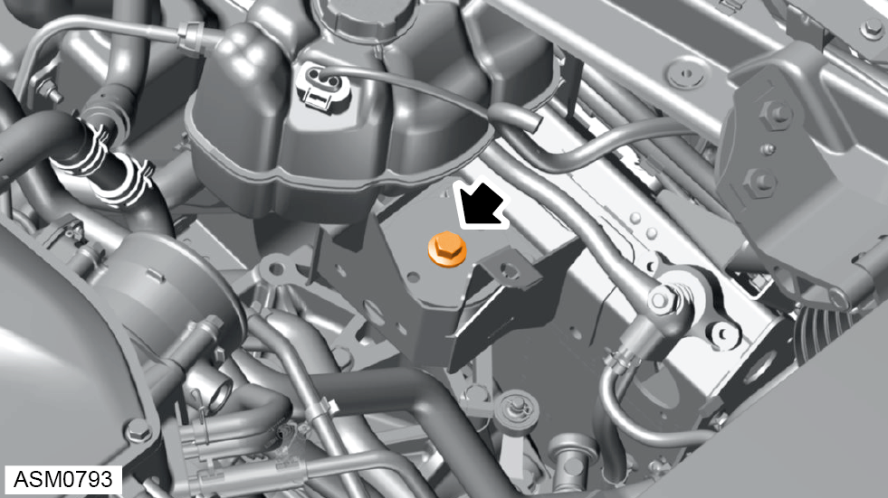
- Remove M12x85 bolt securing left side transmission mount to transmission. Torque 86 Nm.
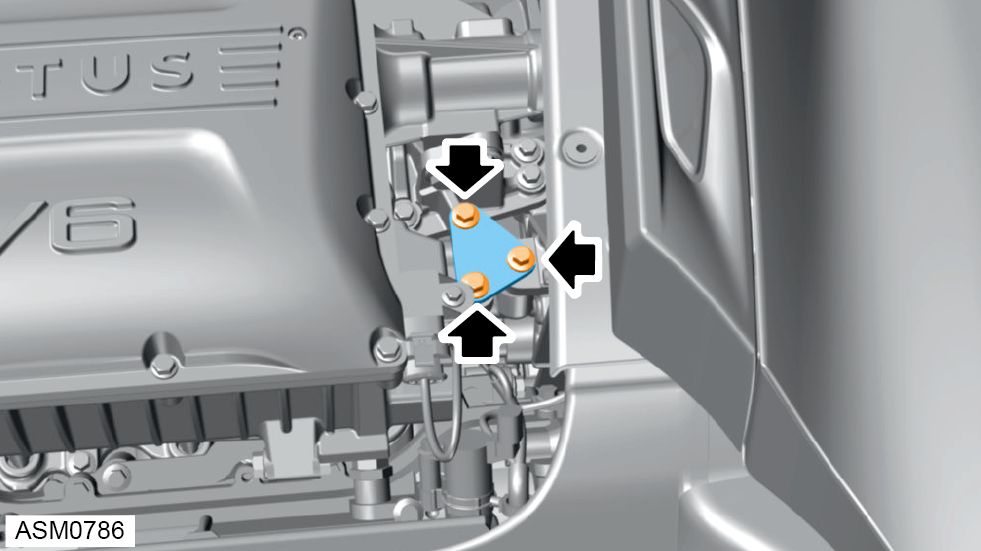
- Remove M8x25 bolts (x3) securing idler support bracket to idler assembly.
- Remove idler support bracket.
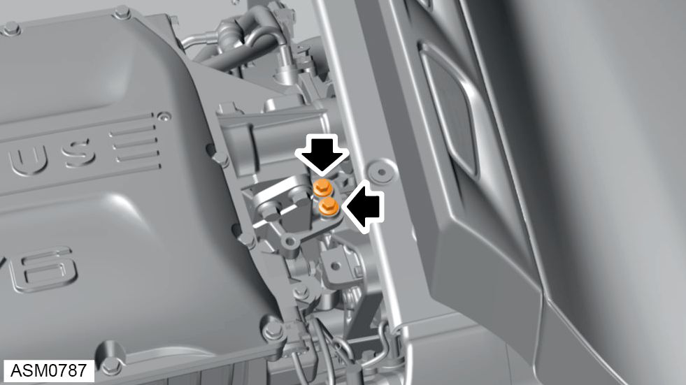
- Remove M8x35 bolts (x2) securing supercharger nose bracket to idler assembly. Torque 24 Nm.
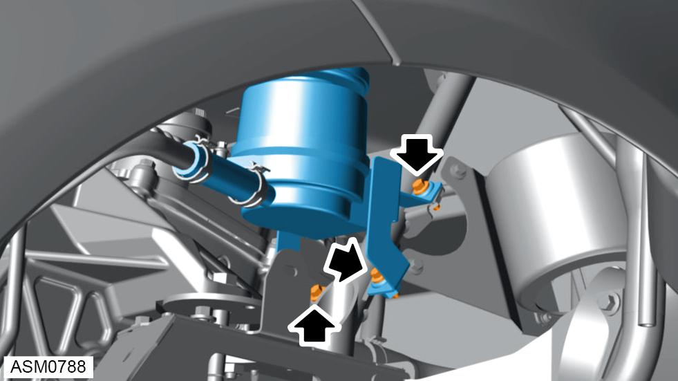
- Remove M6x20 bolts (x3) securing power steering pump reservoir bracket to rear subframe stay. Torque 9 Nm.
- Remove power steering pump reservior bracket and pump assembly aside.
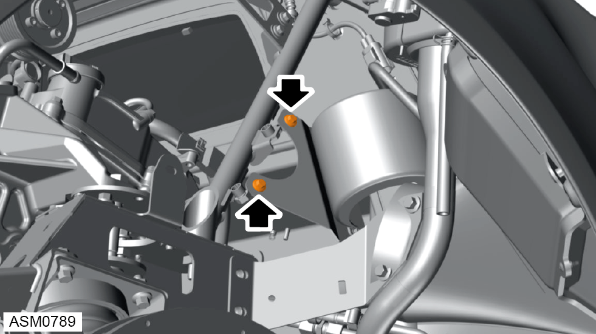
- Remove M6x20 bolts (x2) securing engine bay fan bracket to rear subframe stay. Torque 10 Nm.
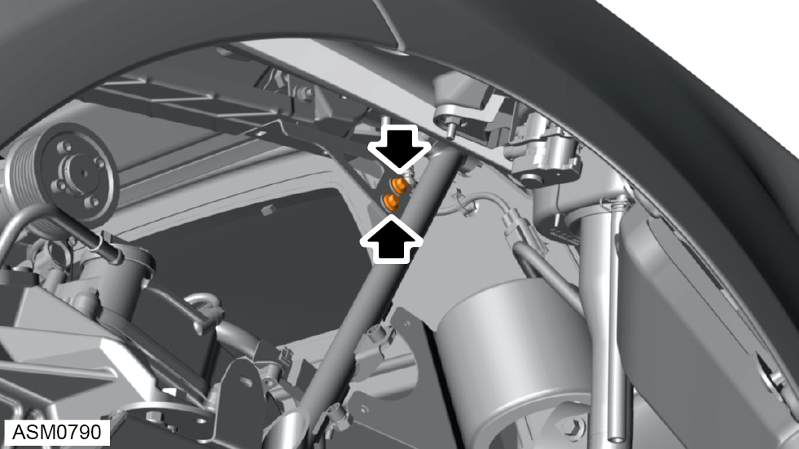
- Remove M6x16 bolts (x2) securing tailgate support bracket to rear subframe stay. Torque 10 Nm.
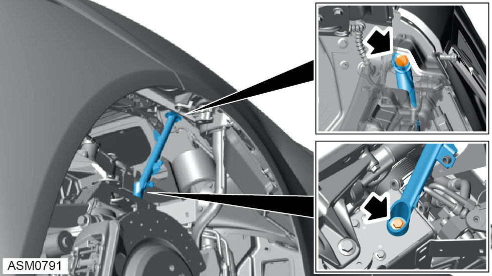
- Remove M10x30 and M10x25 bolts securing rear subframe stay to vehicle. Torque 45 Nm.
- Remove rear subframe stay.
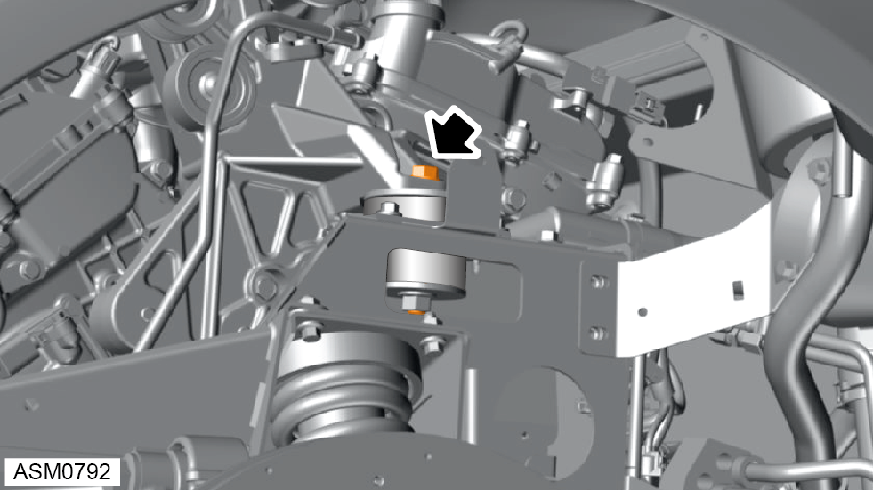
- Remove M12x90 bolt securing idler assembly to subframe. Torque 86 Nm.
- Using a suitable jack, raise engine.
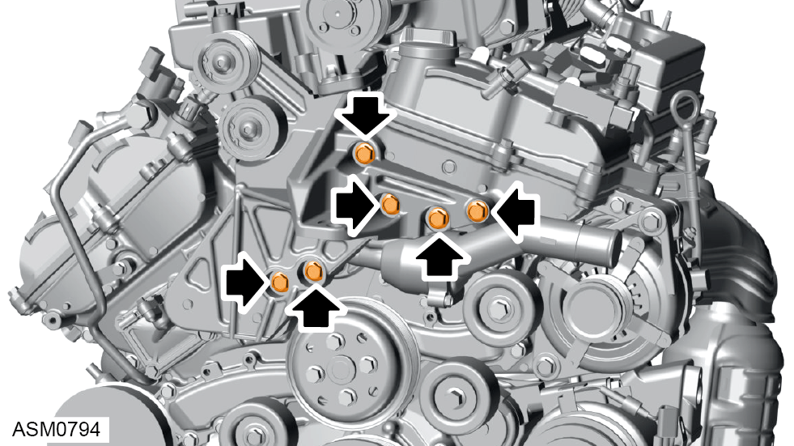
- Remove bolts (x6) securing idler assembly to engine.
NOTE: Record position of bolts (x6) for installation purposes.
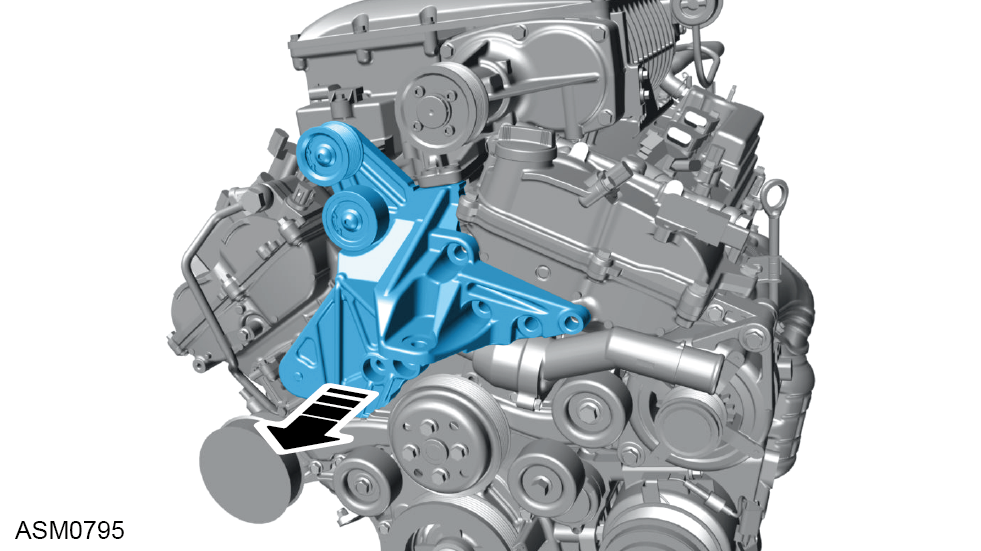
- Remove idler assembly.
Installation
- Installation is the reverse of removal procedure except for the following:
- Install idler assembly.
- Apply Loctite 5900 - 5910 silicone sealant or equivalent to bolts (x6).
- Install bolts (x6) securing idler assembly to engine. Hand tight only.
- Install idler support bracket.
- Install M8x25 bolts (x3) securing idler support bracket to idler assembly. Hand tight only.
- Install M8x35 bolts (x2) securing supercharger nose bracket to idler assembly. Torque 24 Nm.
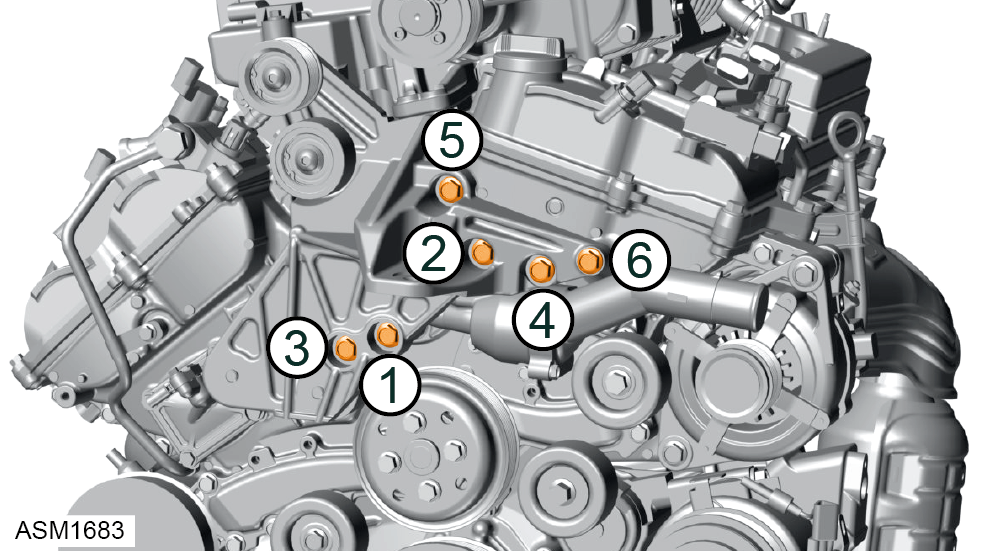
- Tighten bolts (x6) securing idler assembly to engine in sequence shown. Torque 52 Nm.
- Tighten bolts (x3) securing idler support bracket to idler assembly. Torque 24 Nm.